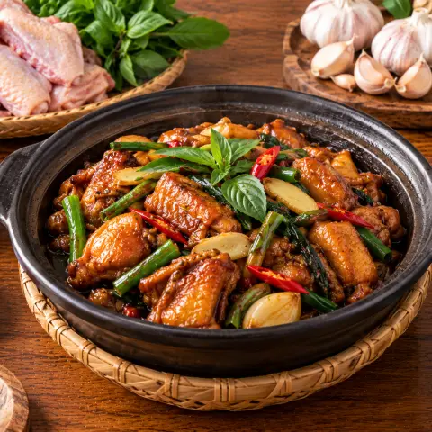

🍗 Gà tam bôi (gà ba chén)
Cánh gà om với dầu mè, rượu và nước tương, thơm gừng, tỏi và húng quế.
Nguyên liệu
- Cánh gà1.000 g
- Dầu mè1 muỗng canh
- Dầu ăn2 muỗng canh
- Gừng6 lát
- Tỏi5 tép
- Ớt khô1
- Rượu nấu ăn60 ml
- Xì dầu đen3 muỗng cà phê
- Nước tương1,5 muỗng canh
- Đường2 muỗng cà phê
- Húng quế1 bó
- Hành lá2 nhánh
Cách làm
- Cho dầu mè, dầu ăn, gừng thái lát, tỏi thái lát và ớt khô bổ đôi vào chảo, đun lửa vừa khoảng 2 phút cho thơm.
- Tăng lửa lớn, xếp cánh gà một lớp và chiên vàng hai mặt.
- Thêm 60 ml nước ấm, rượu, hai loại nước tương và đường.
- Đậy nắp nấu lửa vừa 15–20 phút đến khi gà mềm và chín hẳn.
- Mở nắp, tăng lửa, đảo đến khi sốt sánh lại bám vào gà. Cho húng quế và hành lá đảo đến khi héo rồi dọn ra.
Nấu từng bước với app Yumwell
Hẹn giờ từng bước, danh sách đi chợ và thực đơn tuần. Miễn phí trên Google Play.